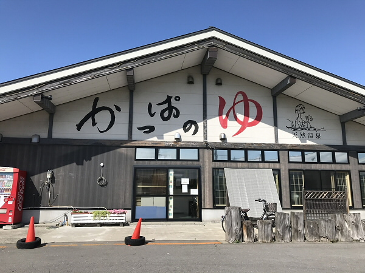

- 


| 面白さ | 快適さ | 料金 | 衛生面 | 周辺施設 |
|---|---|---|---|---|
| 4 | 4 | 4 | 4 | 4 |
今回は青森市の横内にある「かっぱのゆ」さんを訪れました。
駐車場は50台ほどあると思われるのですが、当日は積雪の影響で駐車スペースが減少していました。
泉質はナトリウム塩化物泉という事で、切り傷や皮膚病、神経痛などに効果があります。
そして驚く事に料金は普通420円なのですが、朝5時から10時までの早朝入浴の場合、340円という安さで利用できるとの事。
また、フロントではスマホの充電器を借りる事ができるようで、これは非常にありがたい。

脱衣所は綺麗に片付けられており、足元も濡れていない事から定期的に清掃されているように感じました。

浴場は解放感があり、洗い場の数も多いです。

そして肝心のお風呂は、ヒバで造られていている為か香りがよく、浸かっていると次第にリラックスして眠くなってきます。

屋外には壺湯と子供風呂があり、子供風呂はプールと呼ばれているようで子供が楽しそうに泳いでいました笑
夜中の子供風呂はナイトプールを連想してしまい、雰囲気も良い事から年不相応に遊びたくなってしまったのは内緒の話。

壺湯もいい造りで、中で丸まっていると心が落ち着いていくのを感じました...

また、食堂が自慢との事でメニュー表を確認させていただいたところ、どのメニューも安い...
話を伺ったところ、某有名温泉サイトの青森県内の温泉ランキングで、2021年最も食事がおいしい温泉「ベストオブグルメ賞」を受賞したとの事。
私としてはラーメンがワンコインで食べられるという事にとても驚きましたが...
ちなみに人気があるメニューはチキン南蛮定食と唐揚定食だそうです。私も1度食べてみたい...

そして周辺には、車で5分ほど走らせると私がよく通っているラーメン店の「中華そばオールウェイズ」さんがあります。
当日のお風呂上りのラーメンはいつもとは違って格別に感じました笑
今後はオールウェイズさんに寄る前にかっぱのゆさんで汗を流すのがルーティン化しそうです。
魅力的なお風呂が多く、とても楽しめました。
お風呂の温度も熱すぎずぬるすぎずで、心地良く長い時間浸かっていられるものであった事から、私には相性が良いように感じました。
次訪れる時はチキン南蛮定食を食べてみようと思います。